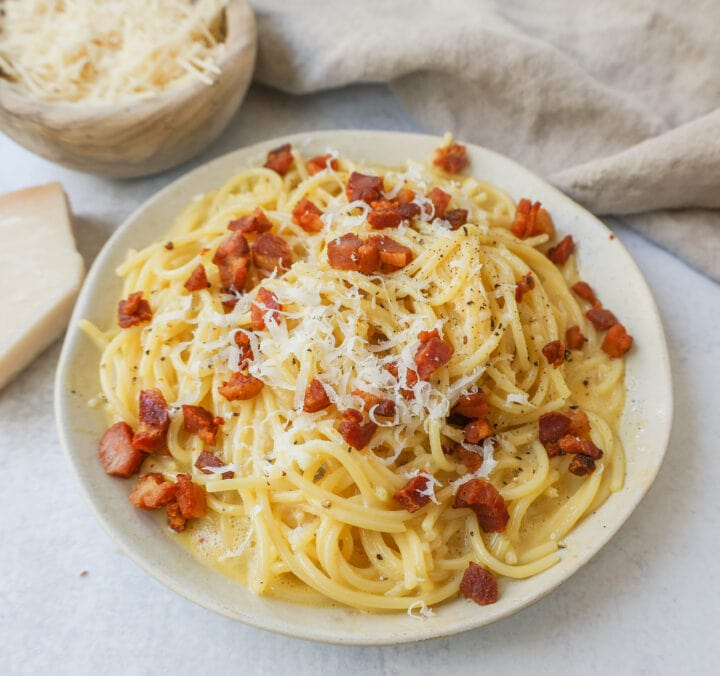

Spaghetti Recipe

This Pasta Carbonara dates back to Rome Italy and is made with the highest quality ingredients. The cheese is what makes the sauce! This is a simple pasta dish using only five ingredients, so it takes less than 30 minutes, from start to finish.
Spaghetti noodles are tossed with nutty parmigiano reggiano or pecorino romano cheese and egg yolks which create the most luxurious cream sauce and topped with pancetta and cracked black pepper. The saltiness from the pancetta paired with the creamy sauce makes the most perfect pasta. This is the best spaghetti carbonara recipe!
Ingredients
- 4 ounces Pancetta (or Guanciale or Bacon)
- 1 cup Parmigiano Reggiano * (or pecorino romano, freshly grated)
- 3 large Egg Yolks
- 1 large Egg
- 12 ounces Spaghetti
- 1/4 teaspoon Black Pepper
- 1/2 cup Pasta Water
Instructions
- Bring 6 quarts of water to a boil over high heat. Add a generous amount of salt to the pot. Stir the spaghetti into the boiling water. Cook the pasta according to package instructions. Reserve 1 cup of pasta water. This is starchy water that adds flavor to the carbonara sauce.
- While pasta is cooking, cook the pancetta, guancile, or bacon until cooked through. Drain on a paper towel-lined plate.
- In a bowl, stir together egg yolks, egg, and parmigiano reggiano cheese until combined. Stir in pepper.
- Once pasta is cooked, drain, and then toss spaghetti with pancetta (or guancile). Once it is tossed, ladle in the cheese/egg mixture, a little at a time. If needed, stir in 1/2 cup of pasta water to coat until the mixture coats the pasta.
- Serve with freshly cracked black pepper and freshly grated cheese.
Notes
- I suggest freshly grating the parmigiano reggiano cheese. I don't suggest using packaged grated parmesan cheese for this recipe because it doesn't easily melt into the sauce.
- Use chopped, small pieces of pancetta, guanciale, or high-quality bacon.
- When pasta is almost finished cooking, remove 1 cup of the starchy pasta water. You will only use 1/2 cup of pasta water in the carbonara but if you want a thinner sauce, you can add more.